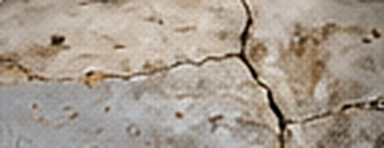
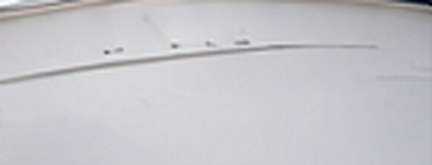
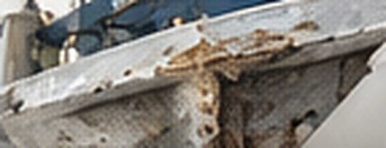
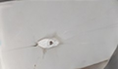

Soft Spots & Delamination•Tampa Bay, Florida
We find the wet core and separated laminate behind a soft or spongy hull, remove it, and rebuild the area so it’s solid, dry and strong again.
When a hull flexes underfoot or sounds dull when tapped, the laminate has usually separated from the core, or the core itself has taken on water. We moisture-test and sound the whole area to map exactly where the damage runs, then repair it from solid material to solid material.


Moisture metering and sounding show where the laminate is wet or separated.
One skin is cut back and the wet or rotted core removed to dry, solid edges.
New marine core is bedded and the skin re-laminated with structural glass.
Faired and gelcoated to match, for a solid hull that looks untouched.
Water in a core keeps spreading, especially in Florida heat. Catching a soft spot early keeps the repair small and the price down.
Real repairs. Real results. A few soft spot and delamination repairs we’ve completed across Tampa Bay.


Separated laminate removed and rebuilt.

New core and laminate, faired and gelcoated.

Rebuilt solid and color matched.
We start by mapping moisture and separation across the whole area, not just the spot you can feel. One skin is opened, all wet or rotted core is removed back to dry, solid material, and new marine-grade core is bonded in. The skin is re-laminated with structural fiberglass, then faired, gelcoated and polished.
Soft spots grow — get them tested before the season, not after.A moisture survey shows the true size of the repair before any cutting starts.
Based in Largo, Florida, we proudly serve boaters throughout Pinellas County, Tampa Bay and surrounding areas. Our fiberglass repair services are available at our shop or through our fully mobile service.
Most soft spots come from water getting into the core through fittings, cracks or old repairs, or from the skin separating from the core after impact or years of flexing.
We use a moisture meter and sound the area with a hammer. Dry, bonded laminate rings; wet or separated laminate sounds dull.
Small, dry separations sometimes can. Wet or rotted core has to be removed — injecting resin over it traps the moisture.
Yes. After re-lamination the area is faired, gelcoated to your color and polished.
Small, above-waterline areas sometimes can. Most core repairs are done at our Largo yard so the laminate can dry and cure properly.
It depends on the size of the wet area and drying time. We give you a timeline once the area is mapped.
Let Captain Levi’s test the area and recommend the right repair.
Have a soft spot or delamination you want looked at, need a quote, or ready to schedule? Fill out the form or give us a call — we’ll get back to you as soon as possible. Your boat deserves the best, and we’re here to make it happen.
Tell us a little about your project and we’ll get back to you quickly.